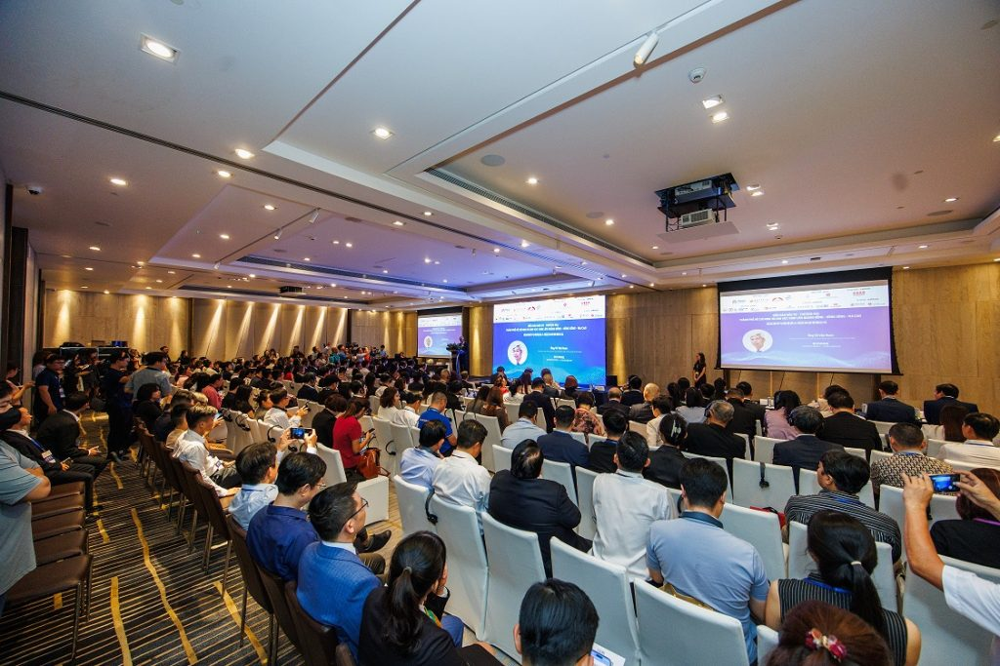

08:30
08:30Arrive
Capital Place

Capital Place in Hanoi
Positioned between Hanoi's diplomatic, commercial and established central districts.
Open MapConnected to the city
Shorter journeys for teams, clients and international visitors.

Business + diplomacy
Capital Place is part of a business ecosystem shaped by embassies, international organisations, corporate offices and premium hospitality.
Future connectivity
Planned direct pedestrian connection to the underground section of Hanoi Metro Line 3.
Underground works remain under construction. Connection, timing and access are subject to project completion and relevant approvals.Your world within reach
Business, hospitality, dining and culture — close enough to shape a better working day.

Corporate workplaces and international business connections in the heart of Ba Dinh.
Explore Office →A day at the address
08:30Capital Place
 10:00
10:00Grand Lobby / Nexus
 12:30
12:30Dining nearby
 17:30
17:30Fitness / West Lake
19:00Central Hanoi
The arrival experience
A seamless arrival for employees, partners and guests.
Explore the neighbourhood